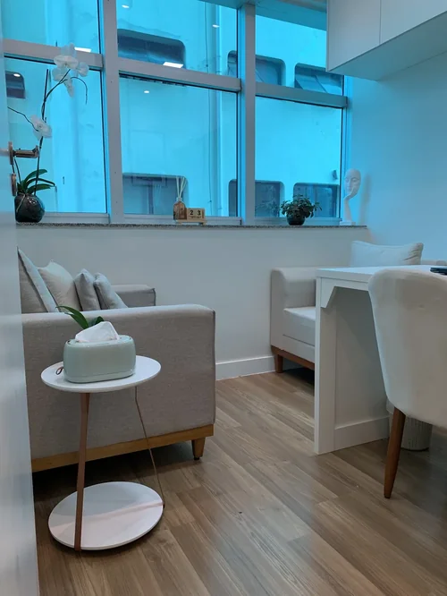

Presencial e Online
Psicoterapia para adultos
Um espaço de escuta e reflexão para compreender experiências, emoções e relações, respeitando a história e o ritmo de cada pessoa.
Atendimento presencial na Vila Andrade e online, conforme a disponibilidade de cada profissional.
Conheça a psicoterapia